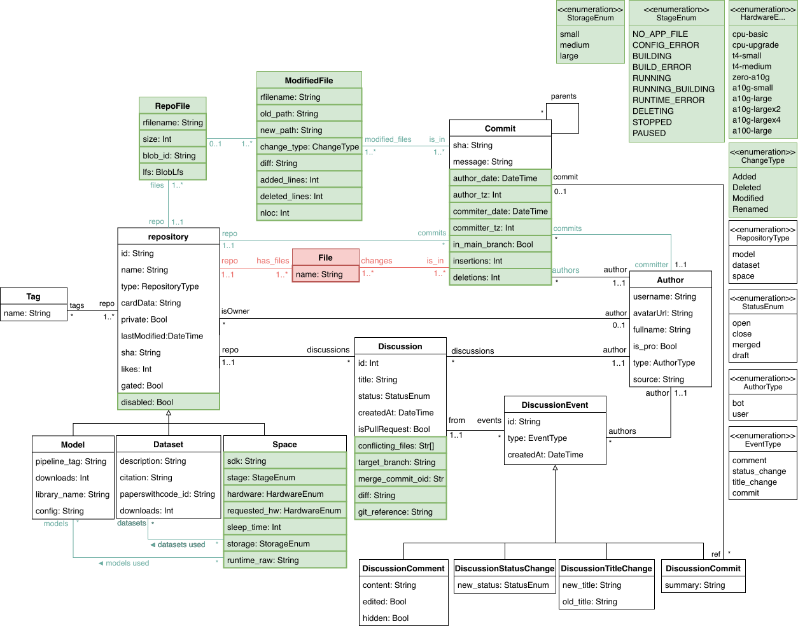
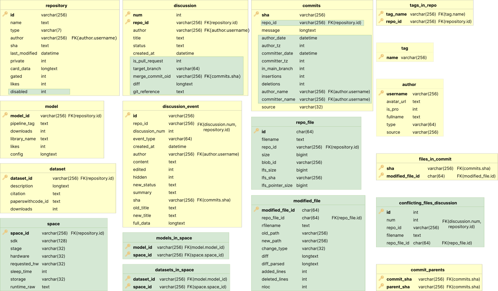
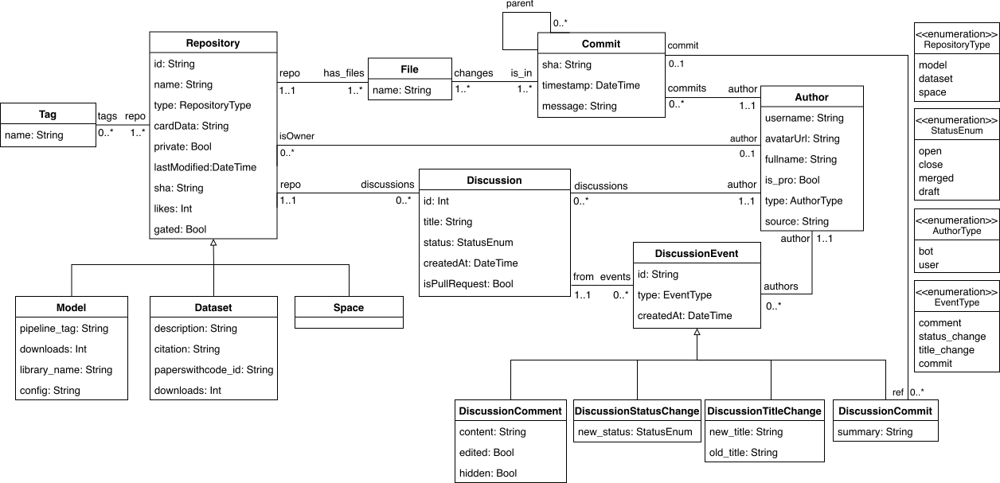
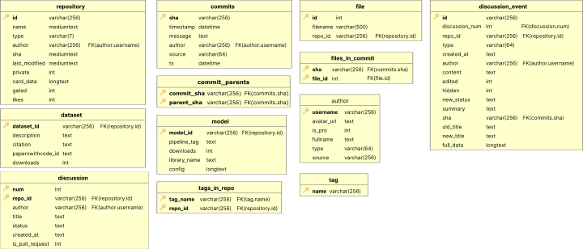

Version History of HFCommunity
This page keeps a track of the releases and design modifications of HFCommunity.
v1.1
This is an extended version of v1.0. The main changes are:
- Addition (e.g., ModifiedFile and RepoFile, replacing File) and extension (e.g., Commit or Space) of classes.
- Addition of new relationships, some as new information (e.g., datasets used) or as enhancements for better performance (e.g., repo-commits).
- Adaptation of extractor source code to current version of the Hub client library. This includes better performance and robustness (e.g., exception handling).
- Modified the use of index parameters in the extractor execution. Now it is only possible to slice the list from the beginning (i.e., the newest repository) to a threshold. We believe this better translates to more accurate users' needs.
The UML and database schema of this version, with changes highlighted (green are added changes and red removed ones), are:
UML diagram (v1.1)

Database schema (v1.1)

v1.0
This is the first version of HFCommunity.
It corresponds to the version presented in SANER 2023. The paper can be accessed from here. The UML and database schema of this version are:
UML diagram (v1.0)

Database schema (v1.0)
